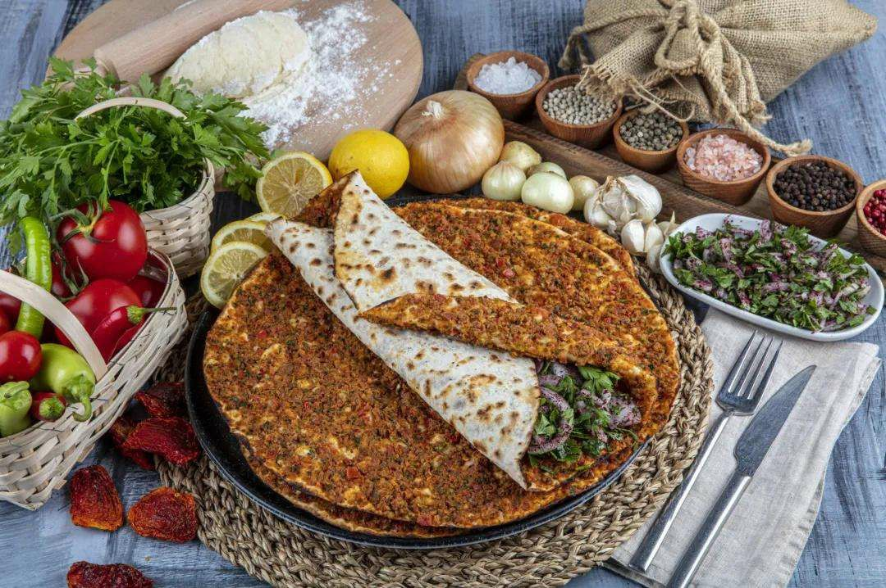

| 网站首页 | 中国 | 泰国 | 印度尼西亚 | 土耳其 | 日本 | 韩国 | 朝鲜 | 登录 |
| 介绍视频 | 简介 | 了解更多... |
| 土耳其--横跨欧亚两洲的国家，是连接欧亚的十字路口，被称为“文明的摇篮”。2015年土耳其成功进入全世界十大旅游国家行列。历史上的土耳其有着6500年悠久历史和前后十三个不同文明的历史遗产，加上三面环海的地势和内陆复杂的地理环境使其拥有了极为丰富的旅游资源。土耳其同时也是一个现代化国家，有着一流的旅游服务设施。这里有热情好客的人民，灿烂的文化，迷人的景色和神秘的传说。当你来到土耳其西、南海岸时，举目所见尽是散布着古希腊、罗马文明，甚至基督教文明的遗迹。近年来，土耳其已成为欧洲的主要旅游观光地。夏季、冬季疗养地的开发在急速地进展，从世界各地来探求土耳其历史、文化、美丽自然的人们每年都在增加。
|
|
 |
 |  |
|
| 风景指南 | 美食指南 | 酒店指南 | 其它更多 |